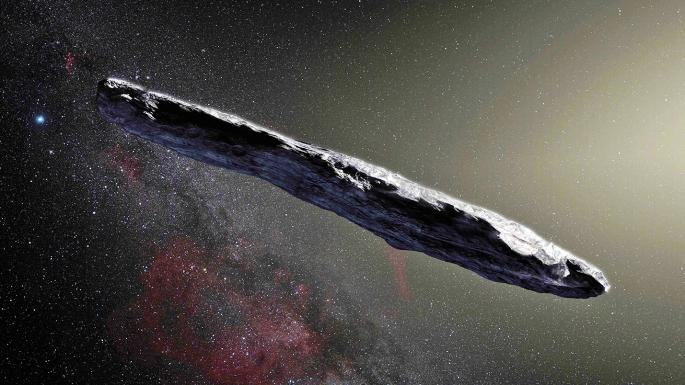
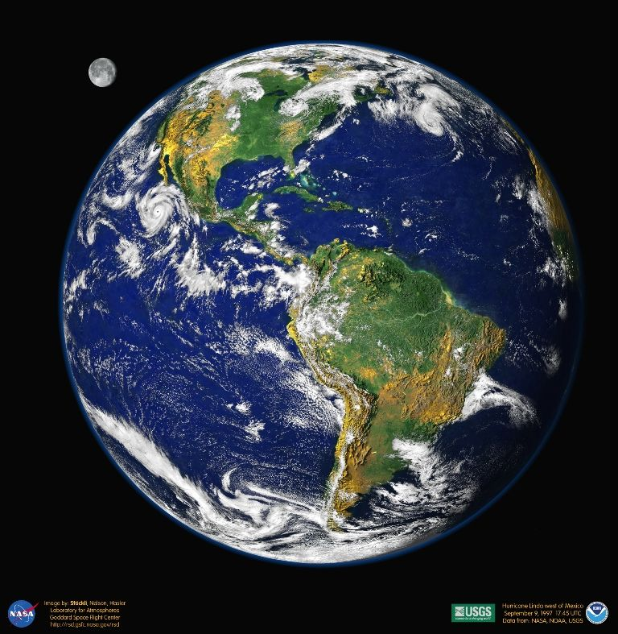
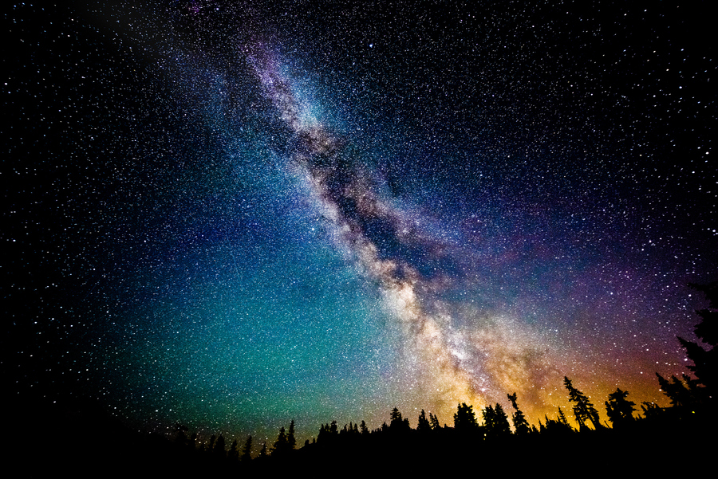

Словарь терминов 🚀
- Астероид (распространённый до 2006 года синоним — малая планета) — относительно небольшое небесное тело Солнечной системы, движущееся по орбите вокруг Солнца.
Астероиды значительно уступают по массе и размерам планетам, имеют неправильную форму и не имеют атмосферы, хотя при этом и у них могут быть спутники.

- Планета — небесное тело, вращающееся по орбите вокруг звезды или её остатков, достаточно массивное,
чтобы стать округлым под действием собственной гравитации, но недостаточно массивное для начала термоядерной реакции, и сумевшее очистить окрестности
своей орбиты от планетезималей.
Планетами греки называли т. н. «блуждающие звёзды». Во многих ранних культурах планеты рассматривались как носители божественного начала или,
по крайней мере, статуса божественных эмиссаров. По мере развития науки представления о планетах менялись в немалой степени и благодаря
открытию новых объектов и обнаружению различий между ними.

- Звезда— массивный газовый шар, излучающий свет и удерживаемый в состоянии равновесия силами собственной гравитации и внутренним давлением,
в недрах которого происходят (или происходили ранее) реакции термоядерного синтеза.
Ближайшей к Земле звездой является Солнце — типичный представитель спектрального класса G.
